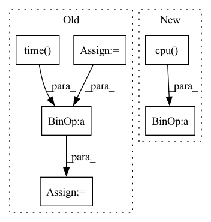

Pattern ID :14246

Before Change
seed_image = np.zeros_like(input_image, np.uint8)
seed_image[seed_pos[0]][seed_pos[1]][seed_pos[2]] = 1
tic = time.time()
fastmarch_output = GeodisTK.geodesic3d_fast_marching(
input_image, seed_image, spacing
)
fastmarch_time = time.time() - tic
tic = time.time()
geodistkraster_output = geodistk_geodesic_distance_3d(
After Change
tic = time.time()
toivanenraster_output = np.squeeze(
FastGeodis.generalised_geodesic3d_toivanen(
input_image_pt, seed_image_pt, spacing, 1e10, 1.0, 4
)
.detach()
.cpu()
.numpy()
)
toivanenraster_time = time.time() - tic
tic = time.time()
fastraster_output_cpu = np.squeeze(
FastGeodis.generalised_geodesic3d(
input_image_pt, seed_image_pt, spacing, 1e10, 1.0, 4
)
.detach()
.cpu()
.numpy()
)
fastraster_time_cpu = time.time() - tic
device = (
"cuda" if input_image_pt.shape[1] == 1 and torch.cuda.is_available() else None
)
if device:
input_image_pt = input_image_pt.to(device)
seed_image_pt = seed_image_pt.to(device)
tic = time.time()
fastraster_output_gpu = np.squeeze(
FastGeodis.generalised_geodesic3d(
input_image_pt, seed_image_pt, spacing, 1e10, 1.0, 4
)
.detach()
.cpu()
.numpy()
)
fastraster_time_gpu = time.time() - tic
print(
"Toivanen"s CPU raster: {:.6f} s \nFastGeodis CPU raster: {:.6f} s".format(
toivanenraster_time, fastraster_time_cpu
)
)
if device:
print("FastGeodis GPU raster: {:.6f} s".format(fastraster_time_gpu))
img_toivanenraster_output = sitk.GetImageFromArray(toivanenraster_output)
img_toivanenraster_output.SetSpacing(spacing_raw)
sitk.WriteImage(
img_toivanenraster_output, os.path.join(image_folder, "image3d_dis2.nii.gz")
)
img_d3 = sitk.GetImageFromArray(fastraster_output_cpu)
img_d3.SetSpacing(spacing_raw)
sitk.WriteImage(img_d3, os.path.join(image_folder, "image3d_dis3.nii.gz"))
input_image_sub = sitk.GetImageFromArray(input_image)
input_image_sub.SetSpacing(spacing_raw)
sitk.WriteImage(input_image_sub, os.path.join(image_folder, "image3d_sub.nii.gz"))
input_image = input_image * 255 / input_image.max()
input_image = np.asarray(input_image, np.uint8)
image_slice = input_image[10]
toivanenraster_output_slice = toivanenraster_output[10]
fastraster_output_cpu_slice = fastraster_output_cpu[10]
if device:
fastraster_output_gpu_slice = fastraster_output_gpu[10]
plt.figure(figsize=(18, 6))
plt.subplot(2, 5, 1)
plt.imshow(image_slice, cmap="gray")
plt.autoscale(False)
plt.plot([70], [60], "ro")
plt.axis("off")
plt.title("(a) Input image")
plt.subplot(2, 4, 2)
plt.imshow(toivanenraster_output_slice)
plt.axis("off")
plt.title("(b) Toivanen"s Raster (cpu) | ({:.4f} s)".format(toivanenraster_time))
plt.subplot(2, 4, 3)
plt.imshow(fastraster_output_cpu_slice)
plt.axis("off")
plt.title("(c) FastGeodis (cpu) | ({:.4f} s)".format(fastraster_time_cpu))
plt.subplot(2, 4, 6)
plt.imshow(toivanenraster_output_slice)
plt.axis("off")
plt.title("(d) Toivanen"s Raster (cpu) | ({:.4f} s)".format(toivanenraster_time))
if device:
plt.subplot(2, 4, 7)
plt.imshow(fastraster_output_gpu_slice)
plt.axis("off")
plt.title("(e) FastGeodis (gpu) | ({:.4f} s)".format(fastraster_time_gpu))
diff = (
abs(toivanenraster_output - fastraster_output_cpu) / (toivanenraster_output + 1e-7) * 100
)
diff_vol = toivanenraster_output - fastraster_output_cpu
diff_slice = diff_vol[10]
plt.subplot(2, 4, 4)
plt.imshow(diff_slice)
In pattern: SUPERPATTERN
Frequency: 3
Non-data size: 6
Instances
Fragment ID: 47277824
Project Name: masadcv/fastgeodis
Commit Name: a1906e989649c1f0b8fdbed147c1d576ac5c41f3
Time: 2022-07-22
Author: muhammad.asad@kcl.ac.uk
File Name: samples/demo3d.py
M Class Name: AnonimousClass
N Class Name: AnonimousClass
M Method Name: demo_geodesic_distance3d(2)
N Method Name: demo_geodesic_distance3d(2)
M Parent Class:
N Parent Class:
M File Name: samples/demo3d.py
N File Name: samples/demo3d.py
M Start Line: 33
M End Line: 204
N Start Line: 17
N End Line: 181
'>
Before Change
v = 1e10
lamb = 1.0
tic = time.time()
fastmarch_output = GeodisTK.geodesic2d_fast_marching(input_image, Seed.astype(np.uint8))
fastmarch_time = time.time() - tic
tic = time.time()
geodistkraster_output = geodesic_distance_2d(
After Change
tic = time.time()
toivanenraster_output = np.squeeze(
FastGeodis.generalised_geodesic2d_toivanen(input_image_pt, seed_image_pt, v, lamb, iterations).cpu().numpy()
)
toivanenraster_time = time.time() - tic
tic = time.time()
fastraster_output_cpu = np.squeeze(
FastGeodis.generalised_geodesic2d(input_image_pt, seed_image_pt, v, lamb, iterations).cpu().numpy()
)
fastraster_time_cpu = time.time() - tic
device = "cuda" if torch.cuda.is_available() else None
if device:
input_image_pt = input_image_pt.to(device)
seed_image_pt = seed_image_pt.to(device)
tic = time.time()
fastraster_output_gpu = np.squeeze(
FastGeodis.generalised_geodesic2d(input_image_pt, seed_image_pt, v, lamb, iterations).cpu().numpy()
)
fastraster_time_gpu = time.time() - tic
print("Runtimes:")
print(
"Toivanen"s CPU raster: {:.6f} s \nFastGeodis CPU raster: {:.6f} s".format(
toivanenraster_time, fastraster_time_cpu
)
)
if device:
print("FastGeodis GPU raster: {:.6f} s".format(fastraster_time_gpu))
plt.figure(figsize=(18, 6))
plt.subplot(2, 4, 1)
plt.imshow(image, cmap="gray")
plt.autoscale(False)
plt.plot([seed_pos[0]], [seed_pos[1]], "ro")
plt.axis("off")
plt.title("(a) Input image")
plt.subplot(2, 4, 2)
plt.imshow(toivanenraster_output)
plt.axis("off")
plt.title("(b) Toivanen"s Raster (cpu) | ({:.4f} s)".format(toivanenraster_time))
plt.subplot(2, 4, 3)
plt.imshow(fastraster_output_cpu)
plt.axis("off")
plt.title("(c) FastGeodis (cpu) | ({:.4f} s)".format(fastraster_time_cpu))
plt.subplot(2, 4, 6)
plt.imshow(toivanenraster_output)
plt.axis("off")
plt.title("(d) Toivanen"s Raster (cpu) | ({:.4f} s)".format(toivanenraster_time))
if device:
plt.subplot(2, 4, 7)
plt.imshow(fastraster_output_gpu)
plt.axis("off")
plt.title("(e) FastGeodis (gpu) | ({:.4f} s)".format(fastraster_time_gpu))
diff = (
abs(toivanenraster_output - fastraster_output_cpu) / (toivanenraster_output + 1e-7) * 100
)
plt.subplot(2, 4, 4)
plt.imshow(diff)
'>
Fragment ID: 47277819
Project Name: masadcv/fastgeodis
Commit Name: a1906e989649c1f0b8fdbed147c1d576ac5c41f3
Time: 2022-07-22
Author: muhammad.asad@kcl.ac.uk
File Name: samples/demo2d.py
M Class Name: AnonimousClass
N Class Name: AnonimousClass
M Method Name: evaluate_geodesic_distance2d(2)
N Method Name: evaluate_geodesic_distance2d(2)
M Parent Class:
N Parent Class:
M File Name: samples/demo2d.py
N File Name: samples/demo2d.py
M Start Line: 29
M End Line: 158
N Start Line: 18
N End Line: 100
'>
Before Change
input_arr = np.ones(shape)*comm.localRank.value
input_arr = ndarray.array(input_arr, ctx=ndarray.gpu(comm.localRank.value))
start = time.time()
comm.dlarrayNcclAllReduce(input_arr, input_arr,
ncclDataType_t.ncclFloat32, ncclRedOp_t.ncclSum)
comm.stream.sync()
end = time.time()
secs = end - start
return size, secs
After Change
stream.sync()
duration += (time() - start)
local_duration = ht.array(np.array([duration, ]), ht.cpu())
comm.dlarrayNcclReduce(local_duration, local_duration,
0, executor_stream=stream)
stream.sync()
if comm.rank == 0:
print("Algorithm bandwidth: %f GB/s" %
(size * iterations / local_duration.asnumpy()[0] * comm.nrank / (2 ** 30)))
def test_p2p(arr, comm, stream, iterations=10):
'>
Fragment ID: 47277820
Project Name: hsword/hetu
Commit Name: de6a6b170885def9398eb2b8685f574fa3420140
Time: 2021-10-11
Author: 657671989@qq.com
File Name: tests/test_nccl_bandwidth.py
M Class Name: AnonimousClass
N Class Name: AnonimousClass
M Method Name: test_allreduce(4)
N Method Name: test_allreduce(1)
M Parent Class:
N Parent Class:
M File Name: tests/test_nccl_bandwidth.py
N File Name: tests/test_nccl_bandwidth.py
M Start Line: 7
M End Line: 23
N Start Line: 9
N End Line: 27